Saindo do Parque Cabo Polonio, voltei pela Ruta 10, e chegando na entrada para Aguas Dulces voltei à cidade. Meu próximo objetivo seria conhecer a Fortaleza Santa Teresa.
Antes de ir até o hotel, passei pela rua dos mercadinhos, queria comprar cerveja para deixar na geladeira. Esperava comemorar a derradeira noite dessa viagem de moto pelo Uruguai, e como não teria nada aberto na cidade à noite, era o que me restava.
[caption id="attachment_629" align="aligncenter" width="500"]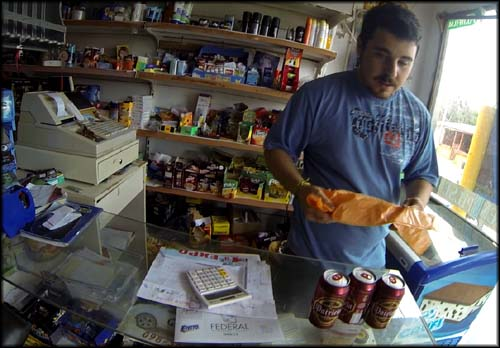 Agora estava fácil comprar 'cervezas', nível avançado de portunhol![/caption]
Dessa vez cheguei mais confiante na pequena vendinha, gastando meu portunhol de primeira. Cumprimentei todos que lá estavam, peguei minhas latinhas e saí contente. Voltei ao Terrazas, deixei as roupas que estavam no baú da moto, coloquei as cervejas para gelar, e voltei pra estrada.
[caption id="attachment_630" align="aligncenter" width="600"]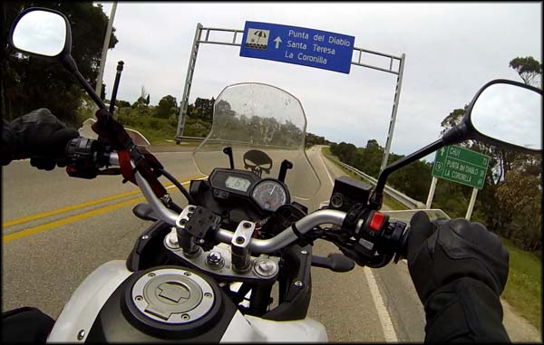 Fortaleza Santa Teresa, aí vamos nós[/caption]
Segui até Castilhos onde peguei a Ruta 9, e parti em direção ao Parque Santa Teresa. Eu poderia fazer esse programa no dia seguinte ao ir embora, já que era o caminho que eu normalmente pegaria para voltar ao Brasil. Mas sobrando algumas boas horas do dia atual, resolvi antecipar a visitação, ganhando tempo para depois passar direto sem precisar parar a viagem. Gastaria mais gasolina, é verdade (120Km ida e volta), mas aproveitaria mais o dia.
Já no caminho me bateu uma preocupação. O nível de combustível estava bem abaixo do que eu procurava deixar chegar, faltando pouco para entrar na reserva. Segui sem exagerar na aceleração, para ter um consumo menor, e não passava por nenhum posto de gasolina.
Punta del Diablo
Rodando pela Ruta 9 passei pela entrada para Punta del Diablo. No decorrer do caminho fiz um rascunho do que poderia conhecer, e essa cidade estava entre as que tinha cogitado ficar um pernoite. Acabou que decidi fazer diferente, e fiquei duas noites em Aguas Dulces.[caption id="attachment_639" align="aligncenter" width="550"]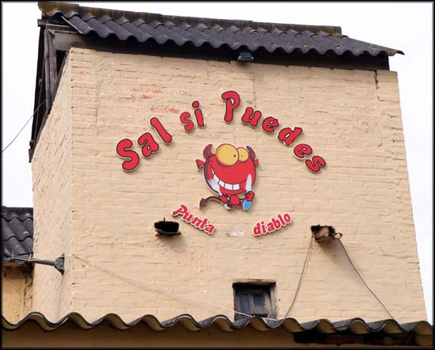 Simpática fachada de restaurante em Punta del Diablo. Mas parecia desativado.[/caption]
Entrei para conhecer, e não me arrependi de não ter ficado por lá. É uma pequena cidade praiana, certamente proporciona bons momentos de lazer à beira mar, e um belo visual das dunas de areia. Mas isso não me importava nessa viagem. Então, beleza.
[caption id="attachment_638" align="aligncenter" width="600"]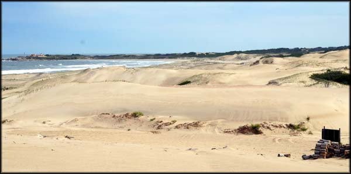 Linda paisagem das dunas em Punta del Diablo[/caption]
Passeei pela orla, tudo vazio, como esperado. Rodei um pouco para captar o clima do local, procurando também o hostel El Diablo Tranquilo onde eu havia pensado em ficar. Tinha lido que era bem animado e sempre rolava umas festinhas à noite. Não achei.
Parei para tirar fotos de umas casas construídas ao lado de dunas de areia. Estavam quase soterradas. O homem lutando contra a natureza.
[caption id="attachment_636" align="aligncenter" width="600"]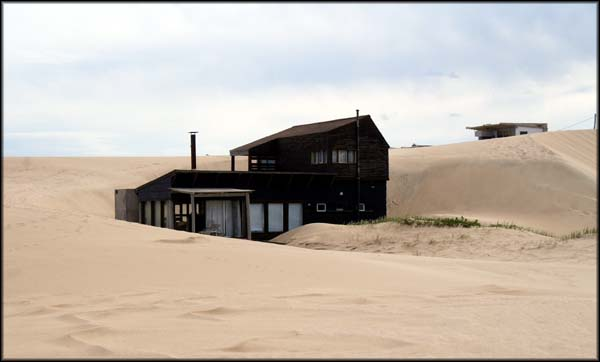 Construção em meio às dunas de Punta del Diablo[/caption]
[caption id="attachment_637" align="aligncenter" width="600"]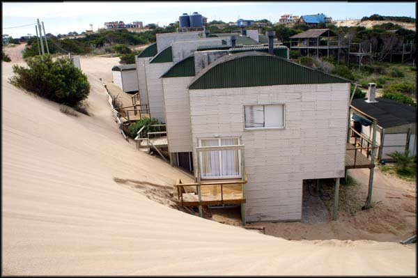 Por enquanto a construção resiste[/caption]
Satisfeito com a breve passagem por Punta del Diablo, retomei meu caminho, voltando para a Ruta 9.
Pilotei por algum tempo, nada de posto de gasolina ainda. Passei da entrada do parque Santa Teresa e do Forte, mas decidi que primeiro tinha que conseguir abastecer, depois faria turismo sem essa preocupação.
E foi só depois de rodar muito, que em uma rotatória para pegar a Ruta 14, fiz sinal para um cara que passava em outra moto parar para pedir informação. Ele disse que havia um posto logo mais adiante, em La Coronilla. Beleza, agradeci.
De fato, rodei por poucos minutos até ver o posto. Completei o tanque (4.335 Km rodados) e aproveitei para beber um café na loja de conveniência (25 pesos). Voltei todo o caminho, agora bem mais tranquilo.
Interessante que num trecho da estrada existem placas de “proibido deterse”, e um símbolo de um avião. De repente a pista, que tem uma mão para cada sentido, alarga-se, quadruplica de tamanho, e é marcada por aquelas largas faixas de pista de pouso em aeroportos. É uma pista para pousos de emergência. Muito inusitado para a minha cabeça, achei maneiro.
[caption id="attachment_635" align="aligncenter" width="600"]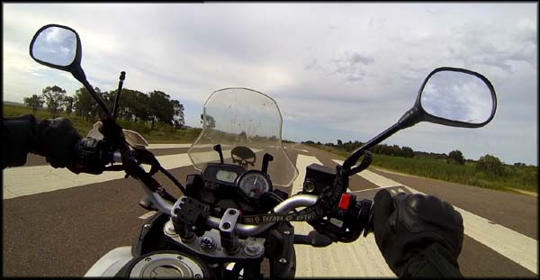 Em direção ao Chuí, pista de pouso em plena rodovia[/caption]
Fortaleza Santa Teresa
Finalmente passei em frente a entrada da Fortaleza Santa Teresa, e entrei. Havia uma precária cabine de madeira, de onde um militar do exército controla a entrada. Ele me recebeu e disse que era só entrar, sem burocracias, sem cobrança de visitação. Fui ver as instalações.[caption id="attachment_642" align="aligncenter" width="600"]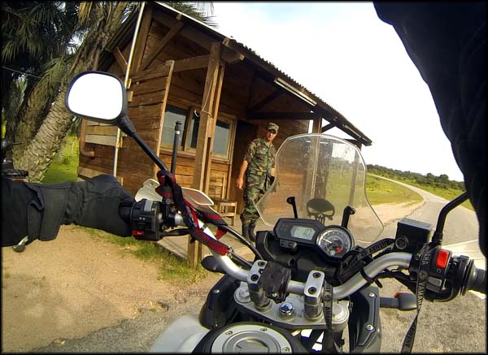 Cancela controlada para entrar na Fortaleza Santa Teresa. Mas sem burocracias.[/caption]
Realmente o forte é bacana, e as pedras usadas na construção possuem um tom de amarelo bem forte, provavelmente devido aos minerais diferentes de sua composição, sei lá, não sou geólogo.
[caption id="attachment_643" align="aligncenter" width="500"]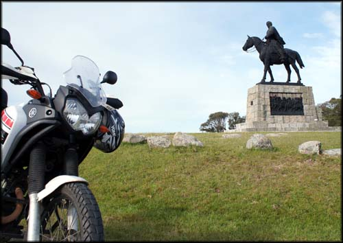 Mais estátuas bem trabalhadas[/caption]
[caption id="attachment_645" align="aligncenter" width="600"]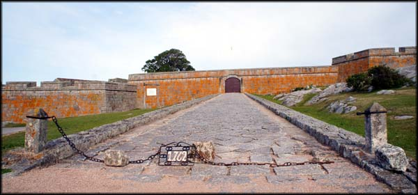 Entrada para a Fortaleza[/caption]
Dei umas voltas de moto ao redor da fortaleza, tirei fotos. Existe um centro de visitantes, mas estava fechado. Assim como a visitação interna, para se conhecer a fortaleza por dentro. É o mal de viajar fora de temporada. Muita paz, pode passear tranquilo sem hordas de turistas, mas algumas atrações ficam fechadas.
[caption id="attachment_646" align="aligncenter" width="550"]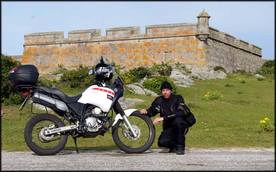 Um dos cantos da fortaleza, ela é bem extensa[/caption]
Ao lado da fortaleza, uma espécie de cemitério ou solo sagrado, não pesquisei e nem tinha placa explicando. Mas a obra em pedra tem lá seu charme por si só.
[caption id="attachment_644" align="aligncenter" width="600"]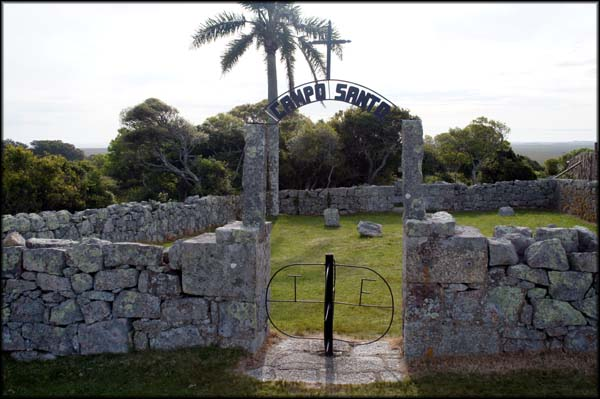 Campo Santo, ao lado da Fortaleza Santa Teresa[/caption]
Passei um tempo por lá, admirando e imaginando a história por detrás das construções. Depois voltei para a estrada. Logo em seguida, entrei no Parque Santa Teresa. Descobriria posteriormente que não precisava ter voltado à estrada para fazê-lo, era só seguir pelas estreitas ruas que haviam internamente.
Parque Santa Teresa
[caption id="attachment_647" align="aligncenter" width="600"]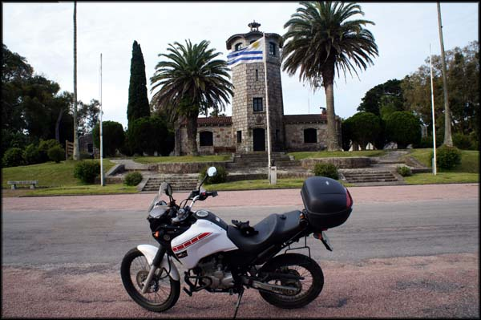 Construção central do Parque Santa Teresa[/caption]Rodei um pouco pelo parque, que na verdade é uma grande área militar, inclusive com casas e alojamentos para os soldados. Fiz uns offroads, vi algumas praias, um lugar bonito, sem dúvida.
[caption id="attachment_648" align="aligncenter" width="500"]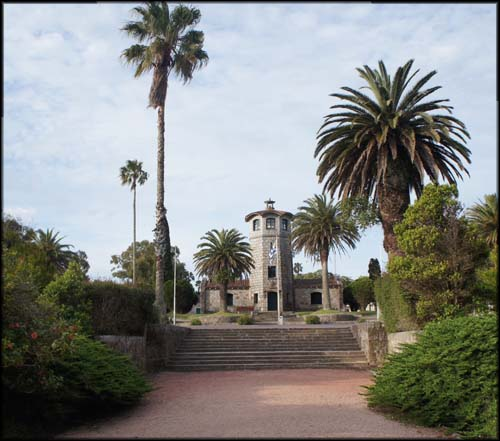 Mais obras em pedras no Parque[/caption]
[caption id="attachment_649" align="aligncenter" width="600"]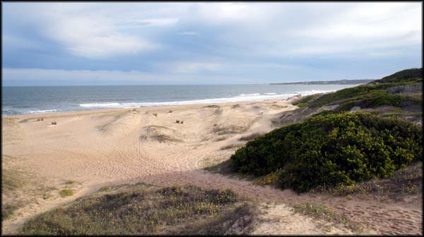 Praia dentro da área do Parque, pessoal fazendo surf na região.[/caption]
Já terminando o dia, tomei meu rumo de volta à Aguas Dulces. Cheguei já escurecendo, e voltei ao apartamento. Tomei um bom banho quente, e fui arrumar minhas tralhas nas malas, com calma, bebendo as cervejinhas que comprara mais cedo. De novo apareceu a senhora perguntando se iria querer a janta. Disse que sim.
Uma hora depois me trouxe outra generosa quentinha, com uma carne assada, salada, e pães caseiros.
[caption id="attachment_650" align="aligncenter" width="550"]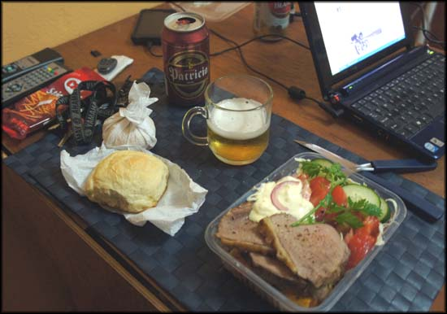 Carne assada com saladas, estava muito bom. E cerveja gelada![/caption]
Fiquei por lá, já um pouco melancólico por ser minha última noite no Uruguai, naquela viagem. Fui dormir tranquilo, conheci muita coisa que nem tinha planejado, pela primeira vez na vida saí de meu país em uma viagem de moto. Conheci gente legal, culturas diferentes, me vi obrigado a exercer com mais ênfase os dons de socialização, que muitas vezes me faltam. Já tinha valido a pena toda a trip. Mas ainda faltava muito para chegar de volta ao Rio de Janeiro.
Pro dia seguinte não sabia bem o que fazer. Sairia de Aguas Dulces e iria em direção ao Chuí. De lá, não tinha decidido o trajeto. Vi na internet que poderia ir por Rio Grande, e atravessar a Lagoa dos Patos em uma balsa. Assim seria possível conhecer algumas outras cidades interessantes, ao invés de passar por cidades maiores como Porto Alegre. Na hora eu decidiria o que fazer.
---------- Comentários são bem vindos, inclusive dúvidas que eu saiba responder. Por questão de organização, comentários sobre a viagem ao Uruguai estarão concentrados no primeiro artigo que pode ser acessado aqui: Viagem de Moto do Rio ao Uruguai. Obrigado pela visita!